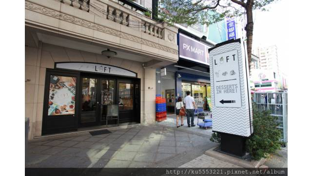
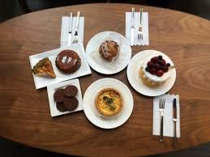
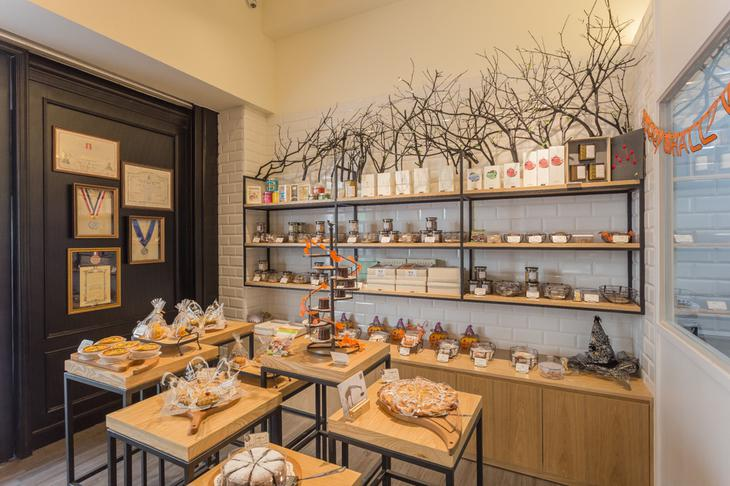

高雄美術館instagram打卡餐廳
靠杯咖啡
Trattoria Venti
碳佐麻里
蘿芙甜點
學習心得

蘿芙甜點
地址：804高雄市鼓山區美術東二路61號
電話：(07) 5553252
營業時間：週二~週五13:00~21:00／週六日12:00~21:00／週一公休


蘿芙甜點LOFT patisserie，是一群非常專業甜點師傅共同創業，
一進門就被輕工業風所吸引，利用鐵件與木頭做為設計中心，
整體顏色是偏暖色調為主軸，整個空間把他定義為，
歐洲簡約輕工業風格，他沒有傳統工業風重口味的粗獷
卻有簡約時尚的的溫柔，改良式的「輕工業風」是往後的潮流，這是我的個人的建議。
學習心得